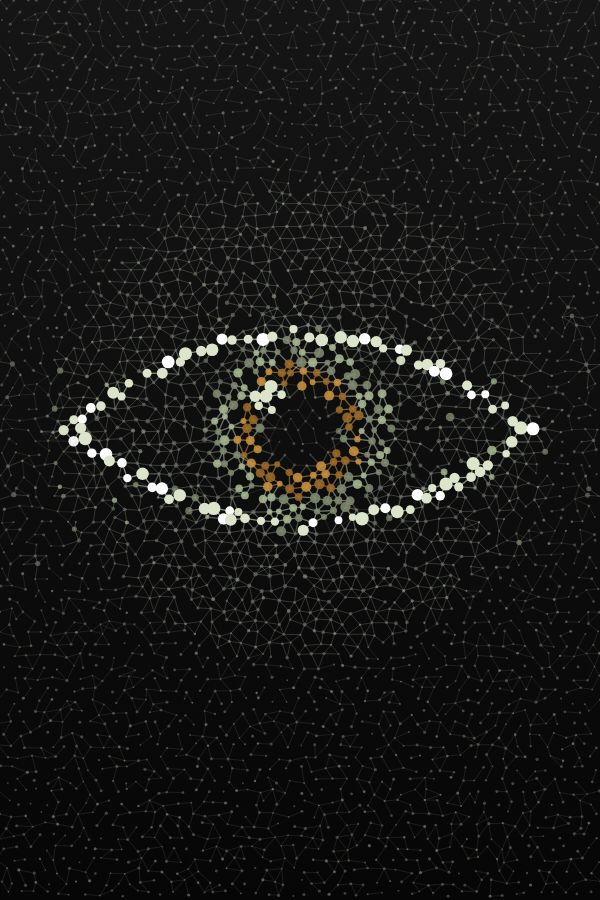
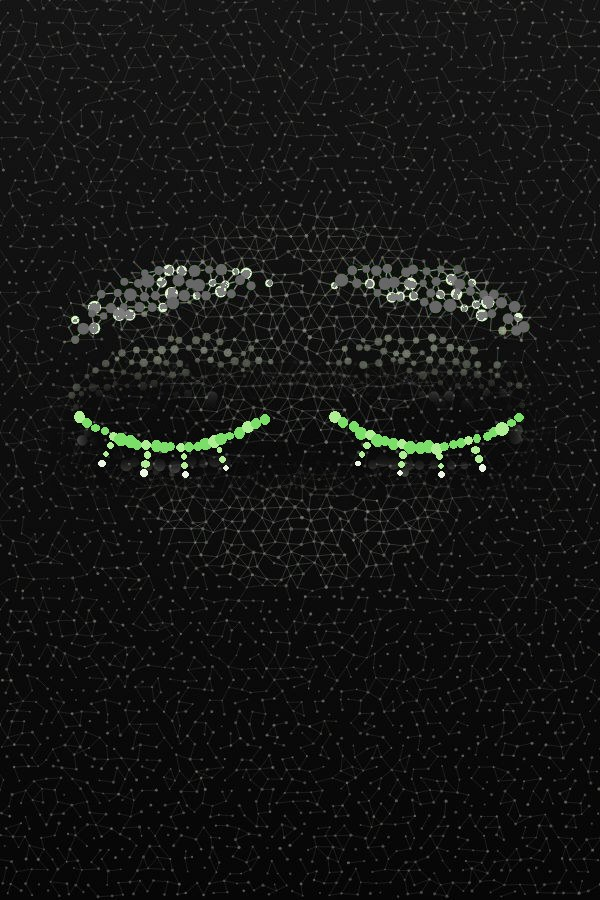
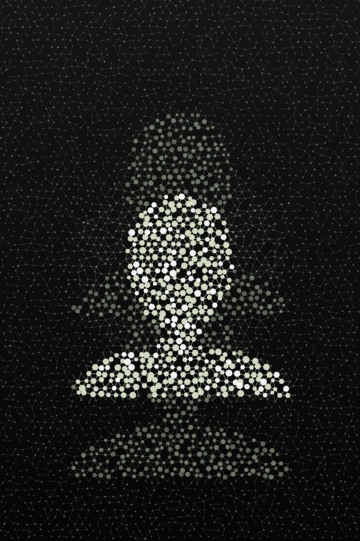
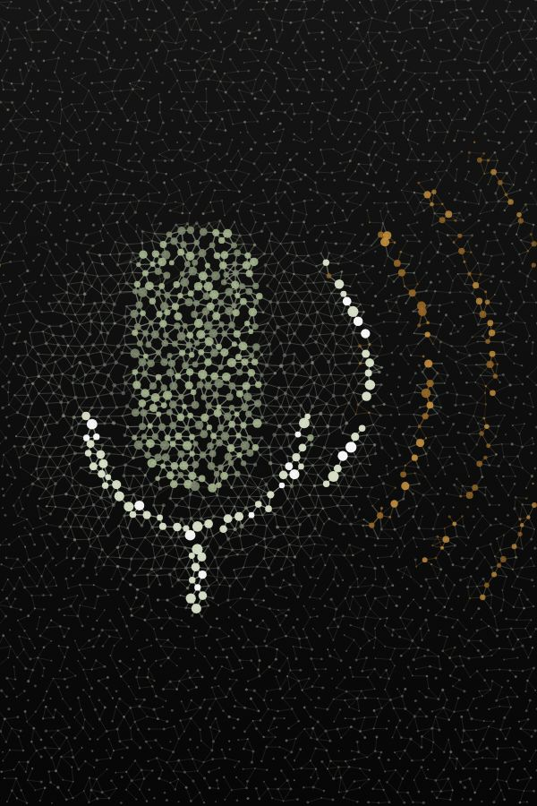

Hands-free computing for older adults and people with disabilities
Your eyes, face and voice are the mouse.
“EYEable” turns an ordinary webcam and microphone into a full computer controller.
It tracks your eyes, head and nose: your head steers the pointer, your eyes click.
Hold a long blink to click. Say “right click” for the menu.
Say what you want. Our speech model was fine-tuned on slurred speech.
EyesLong blinkHead & noseHead tiltYes / noVoice
02 / 05 · How it works
How eye tracking works with a normal webcam
No special hardware. In every webcam frame [eye]able tracks your eyes, head and nose. Your head steers the pointer like a mouse, your eyes click and confirm, and optional eye-pull and nose-assist modes help it travel. A long, deliberate blink clicks; ordinary blinks are ignored.
Try it · move your mouse over this panel
iris offset x+0.00
iris offset y+0.00
screen point960, 540
01
Find the face
Each webcam frame is scanned for a face and 478 landmark points, including the eyes, nose and mouth.
02
Measure eyes, head and nose
The iris centre is compared with the eye corners. The turn of your head and the tip of your nose are compared with your own resting face.
03
Calibrate in 2 seconds
When the camera first sees you, the pointer jumps to the middle of the screen: look at it for a moment. [eye]able learns where “straight ahead” is for your head and eyes. Say “calibrate” to do it again.
04
Point, blink and act
Your head steers the pointer: small turns aim finely, quick turns go far. Optional modes let your eyes pull it toward where you look, or your nose carry it to the screen edges. A filter smooths jitter and small wobbles, and [eye]able moves the real mouse. A long blink clicks exactly where the pointer is.
03 / 05 · Controls
Six ways to control. Zero hands.
Use whichever your body allows. Every input can be switched on or off. Clicking by holding still (dwell) is there too, switched off by default.

01
Look
Moves the pointer
Your head steers the pointer like a mouse: small turns aim finely, quick turns go far. Optional helpers let your eyes pull it toward where you look, or your nose carry it to the screen edges.
head pose · optional eye pull & nose assist · 30 fps
LookMoves the pointer
Look

02
Long blink
Left click
Close both eyes for about half a second and it clicks exactly where the pointer is. Ordinary blinks and winks never click. Or say “click” and it snaps onto the nearest button.
both eyes · 0.4 – 1.6 s · normal blinks ignored
Long blinkLeft click
Long blink03
Mouth
Right click
Say “right click”. Opening and closing your mouth can right-click too: it's optional, because talking can set it off.
voice · mouth 0.3 – 1.5 s (optional)
MouthRight click
Mouth

04
Head tilt
Scroll
Tilt your head toward a shoulder and hold to scroll a step (left = up, right = down). Or say “scroll”, then lift or lower your chin: the further you move, the faster it scrolls.
tilt 18° held 0.4 s · chin in scroll mode
Head tiltScroll
Head tilt05
Yes & no
Answer questions
Blink or raise your eyebrows for yes, shake your head for no. Risky actions always ask first; no answer in 12 s counts as no.
brows 0.25 s · shake swings ≈ 14° · 12 s to answer
Yes & noAnswer questions
Yes & no

06
Speak
Commands & typing
“Click Send”, “scroll down”, “start dictation”. Always listening, no button to hold. Only your own voice counts.
faster-whisper · runs on the laptop
SpeakCommands & typing
Speak
04 / 05 · Voice
Speech others find hard to follow. Understood.
Standard Whisper gets 41% of words wrong on slurred (dysarthric) speech. So we taught it to listen better.
Listening · English01 / 05
Whisper heard
Understood
0%
Real mishearing from our testingfixed
01
Fine-tuned on dysarthric speech
Whisper large-v3-turbo, trained on the TORGO database.
02
Errors cut by more than half
41.4% → 19.4% word errors on 2 unseen speakers.
03
Time to speak
Pause up to 4 s. Nothing is typed until you say yes or blink.
04
Forgiving commands
About 60 commands, many ways to say each.
05
Only your voice
Counts only when the camera sees your mouth move.
06
Your own voice, optionally
Record about 150 phrases to adapt it. Stays on your PC.
Details and limits: sentences 27.3% → 13.8%, single words 74.8% → 32.6%, mildly affected speaker 15.3% → 3.6%; typical speech 1.98% → 2.01%. A research result on 2 test speakers, not a clinical claim: TORGO speakers read the same prompts, so the sentence wording (not the voices) appeared in training, and the check on brand-new sentences had only 5 sentences, too few to judge. TORGO’s licence keeps the tuned model on our PC, so the public download uses standard Whisper. English only for now; Vietnamese is a future goal.
05 / 05 · Gestures
Gesture map. One move, one action.
Everything runs on your laptop. Nothing is saved, except a voice pack you choose to record.
01
You do
Move your eyes
Computer doesMove pointer
eyes → pointerlive signal
How it’s detected
Look where you want to go: the pointer glides toward your gaze, and a small head turn lands it exactly. Small turns aim finely, quick turns travel far. One look at the screen’s centre calibrates it.
Ready? See it open YouTube, search and send an email without a single touch.
Credits: built at Gator Hack V, UF AI Days 2026, by Khang, Khoi, Khoa, Hung and Nhi. Speech data: TORGO (Rudzicz, Namasivayam & Wolff, 2012, University of Toronto; academic, non-profit use) and LibriSpeech (Panayotov et al., 2015, CC BY 4.0). Models: Whisper (OpenAI, MIT) via faster-whisper, MediaPipe Face Landmarker (Google, Apache 2.0), UI-Venus 1.5 (Ant Group), Qwen2.5 (Alibaba Qwen). Our code is MIT licensed.
TrackingPointer simulated
New Tab
google.com
A
Mail
Search for apps, settings, and documents
Pinned
All ›
Recommended
More ›
Grocery listYesterday at 5:12 PM
Family photosMon at 9:40 AM
Doctor appointmentsOct 20
Bus timetableOct 18
AAlex
72°FSunny
Search
ENG9:41 AM 24/10/2026
BLINK · CLICK
Activity
Point at something on the screen and click. With the engine on, your head moves the pointer and a long blink clicks.